install.packages("tidyverse")Visualizing Single-Participant Data
Introduction
Welcome to the tutorial on “Visualizing Single-Participant Research Data with Line Plots using ggplot2 in R.” This tutorial is designed for first-year graduate students who are embarking on their research journey and have little to no experience with data visualization in R.
Single-participant research studies play a vital role in various fields, including psychology, education, and healthcare. They involve the systematic observation of individual participants over time, allowing researchers to gain valuable insights into behavioral patterns, interventions, and treatment effects. One of the most powerful tools at your disposal for exploring and communicating the findings from such studies is data visualization.
We will use the popular ggplot2 package in R, a versatile and powerful tool for creating a wide range of data visualizations.
Throughout this tutorial, you will learn how to: - Set up your R environment and load the necessary packages.
- Import and examine single-participant research data. - Create clear and informative line plots with time on the x-axis and a measure on the y-axis. - Enhance your plots with labels, colors, and error bars. - Customize and format your visualizations to meet publication standards. - Apply your newfound skills to a real-world case study.
By the end of this tutorial, you will have the knowledge and skills to effectively visualize single-participant research data, enabling you to communicate your findings with clarity and precision. So, let’s get started with the fundamentals of ggplot2 and begin your journey into the world of data visualization for single-participant research!
Section 1: Getting Started with ggplot2
Installing and Loading ggplot2
Before we dive into creating line plots for single-participant research data, we need to make sure that we have the necessary tools installed and loaded. We’ll start by installing and loading the `ggplot2` package, which is the cornerstone of our data visualization efforts.
Installation
To begin creating data visualizations with ggplot2, we’ll first need to install and load the `tidyverse` package, which includes ggplot2 and other helpful packages for data manipulation and visualization.
Then, if you want to use the full functionality of the package, you will need to load the tidyverse at the beginning of your code:
library(tidyverse)── Attaching packages ─────────────────────────────────────── tidyverse 1.3.1 ──✔ ggplot2 3.3.5 ✔ purrr 1.0.1
✔ tibble 3.2.0 ✔ dplyr 1.1.0
✔ tidyr 1.3.0 ✔ stringr 1.5.0
✔ readr 2.1.1 ✔ forcats 0.5.1── Conflicts ────────────────────────────────────────── tidyverse_conflicts() ──
✖ dplyr::filter() masks stats::filter()
✖ dplyr::lag() masks stats::lag()If you ever find yourself just wanting ggplot2 (i.e., and not all of the tidyverse packages), you can always load that individually:
library(ggplot2)Understanding the Philosophy of ggplot2
Grammar of Graphics
ggplot2 is built on the Grammar of Graphics concept, which breaks down a complex plot into a set of modular and composable components. Think of it as a language for describing how to create visualizations. The Grammar of Graphics consists of the following key components:
Data: The dataset you want to visualize.
Aesthetic Mapping: Mapping variables in your data to visual properties like color, size, or position.
Geometric Objects (Geoms): The geometric shapes used to represent data points (e.g., points, lines, bars).
Faceting: Dividing your data into subsets and creating separate plots for each subset.
Statistics: Summarizing or transforming your data before plotting (e.g., calculating means or smoothing lines).
Coordinate System: Defining the scales and coordinate system for your plot.
By combining and customizing these components, you have full control over the appearance and structure of your visualizations.
Layers Approach
ggplot2 uses a layered approach to create plots. You build a plot by adding layers, with each layer representing a different aspect of your data visualization. This approach encourages a modular and flexible workflow, allowing you to add or modify layers as needed.
Declarative Syntax
ggplot2 uses a declarative syntax, meaning you describe what you want your plot to look like rather than specifying how to create it step by step. This results in concise and expressive code, making it easier to convey your visualization intentions.
In the following sections, we’ll explore how to apply these principles when creating line plots for single-participant research data using ggplot2. Let’s put the Grammar of Graphics into practice!
Section 2: The Anatomy of a ggplot
Let’s make our first ggplot! But first, let’s simulate some data.
# Simulate single-participant data
weeks <- 1:10
scores <- rnorm(10, mean = 75, sd = 5)
# Create a tibble
student_data <- tibble(week = weeks, score = scores)
# Display the first few rows of the data
student_data# A tibble: 10 × 2
week score
<int> <dbl>
1 1 73.0
2 2 76.9
3 3 81.4
4 4 76.2
5 5 78.0
6 6 69.6
7 7 70.7
8 8 74.9
9 9 76.8
10 10 73.2The main function for ggplots, is well, the ggplot() function! If you just run this function, you get a blank graph with nothing at all.
ggplot()
But that’s no fun! Let’s add some data to graph. We can do that using the data argument in the ggplot function.
ggplot(data = student_data)
But wait, there isn’t anything showing! We have to tell ggplot how to turn our data into graphical components, for example, what goes on the x- and y-axes. We do this process using the aesthetics function aes(). Here, we will tell it that the week variable should go on the x-axis and the score data is what we want on the y-axis.
ggplot(data = student_data, aes(x = week, y = score))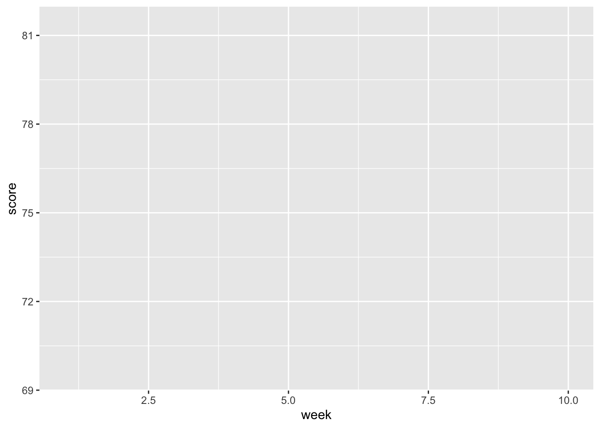
Now, you see that we have x- and y-axes. Next, we will tell ggplot how we want to map the data. We add a layer of visualization onto our ggplot using a geom. There are many types of geoms, including bar charts, box-plots, and almost any other types of chart. For now, we’ll just focus on the ones that are most useful for visualizing single-participant data. Let’s start by adding some points that represent our data. We add layers onto our graph by adding a +, followed by additional functions.
ggplot(data = student_data, aes(x = week, y = score)) +
geom_point()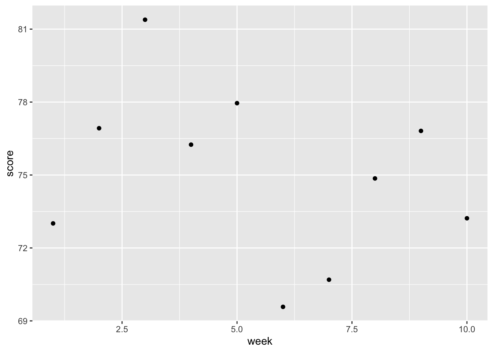
Now, we can see our single participant’s scores across all 10 weeks. But, it’s a little hard to make out what’s going on. Let’s add lines connecting all of the points.
ggplot(data = student_data, aes(x = week, y = score)) +
geom_point() +
geom_line() 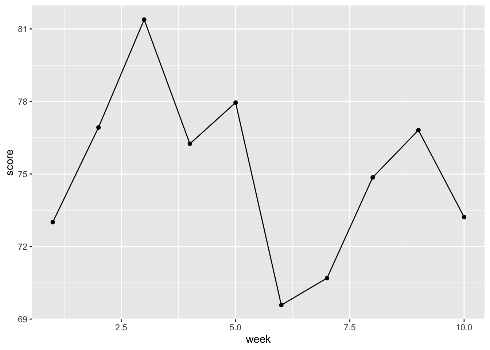
That’s looking pretty good! Let’s add some labels to the graph using the labs function.
ggplot(data = student_data, aes(x = week, y = score)) +
geom_point() +
geom_line() +
labs(title = "Test Scores by Week",
subtitle = "n = 1",
x = "Week #",
y = "Score",
caption = "Source: simulated data")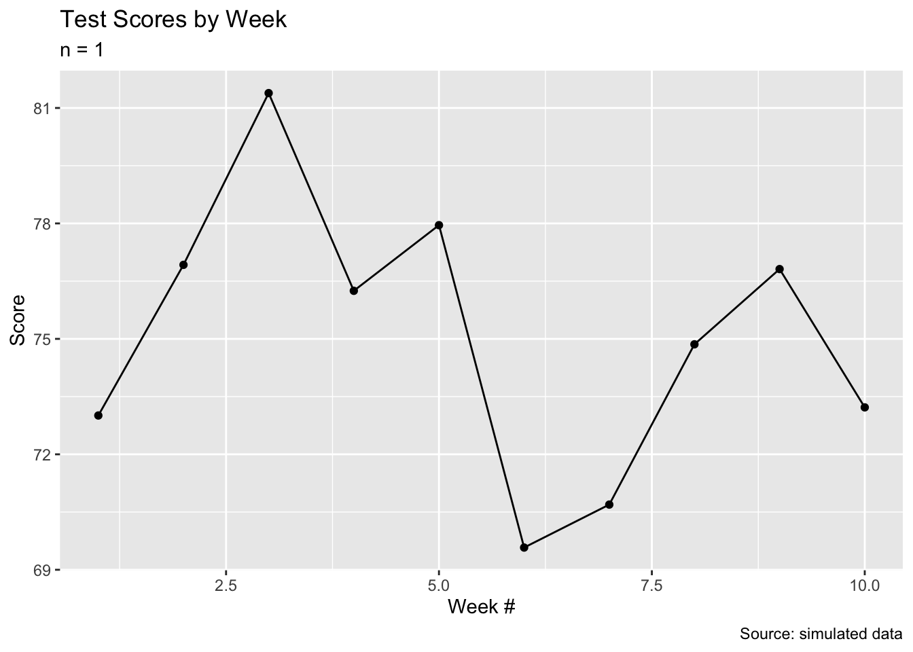
Congrats, you just made a good-looking ggplot!
Section 3: The Aesthetics Function
In the previous section, we used the aesthetics function, aes , to map our data to the x- and y-axes. But it can map to other components of our graph. Let’s simulate some data again with additional variables that we may want to incorporate visually into our ggplot.
# Simulate single-participant data
weeks <- 1:10
scores <- rnorm(10, mean = 75, sd = 5)
scores_math <- rnorm(10, mean = 75, sd = 15)
scores_reading <- rnorm(10, mean = 65, sd = 5)
teacher <- factor(sample(c("Annie", "Brandon"), size = 10, replace = TRUE))
class_size <- sample(5:20, size = 10, replace = TRUE)
teacher_evaluation <- ordered(sample(1:5, size = 10, replace = TRUE),
levels = 1:5,
labels = c("Very Dissatisfied", "Dissatisfied", "Neutral", "Satisfied", "Very Satisfied"))
# Create a tibble
student_data <- tibble(week = weeks, score = scores, teacher = teacher, class_size = class_size, teacher_eval = teacher_evaluation, scores_math = scores_math, scores_reading = scores_reading)
# Display the first few rows of the data
student_data# A tibble: 10 × 7
week score teacher class_size teacher_eval scores_math scores_reading
<int> <dbl> <fct> <int> <ord> <dbl> <dbl>
1 1 75.9 Annie 17 Very Satisfied 69.9 66.4
2 2 71.5 Brandon 14 Neutral 77.9 69.0
3 3 72.6 Annie 12 Very Satisfied 62.7 66.2
4 4 75.4 Brandon 10 Dissatisfied 78.7 73.9
5 5 79.5 Brandon 13 Dissatisfied 41.0 65.9
6 6 74.3 Brandon 17 Very Satisfied 72.7 70.8
7 7 72.3 Annie 5 Satisfied 66.0 66.5
8 8 73.9 Annie 7 Dissatisfied 86.0 65.4
9 9 65.3 Annie 10 Very Dissatisfied 62.9 70.7
10 10 83.1 Annie 7 Neutral 62.3 65.6Let’s start from our graph from before.
ggplot(data = student_data, aes(x = week, y = score)) +
geom_point() +
geom_line() +
labs(title = "Test Scores by Week",
subtitle = "n = 1",
x = "Week #",
y = "Score",
caption = "Source: simulated data")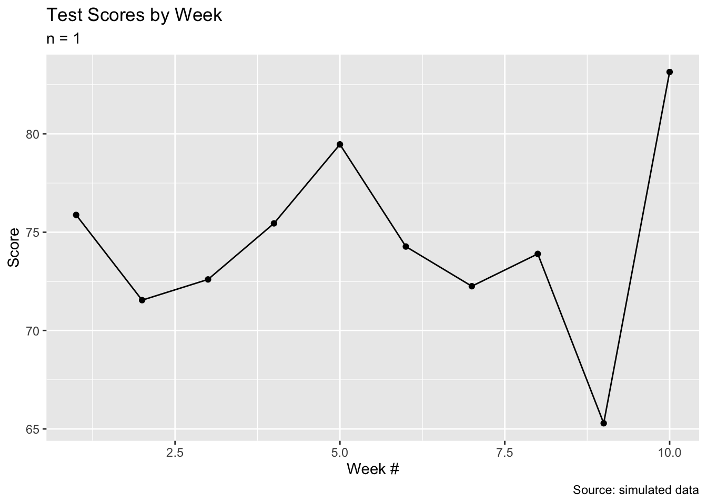
How may we want to incorporate these additional variables? Perhaps, we want to visualize the evaluations given by the teachers for our student. This visualization could tell us if the score and teacher evaluation are related. Let’s do that by changing the color of the points based on the evaluations. We do that by using additional arguments in the aes function, in this case, the color argument.
ggplot(data = student_data, aes(x = week, y = score, color = teacher_eval)) +
geom_point() +
geom_line() +
labs(title = "Test Scores by Week",
subtitle = "n = 1",
x = "Week #",
y = "Score",
caption = "Source: simulated data")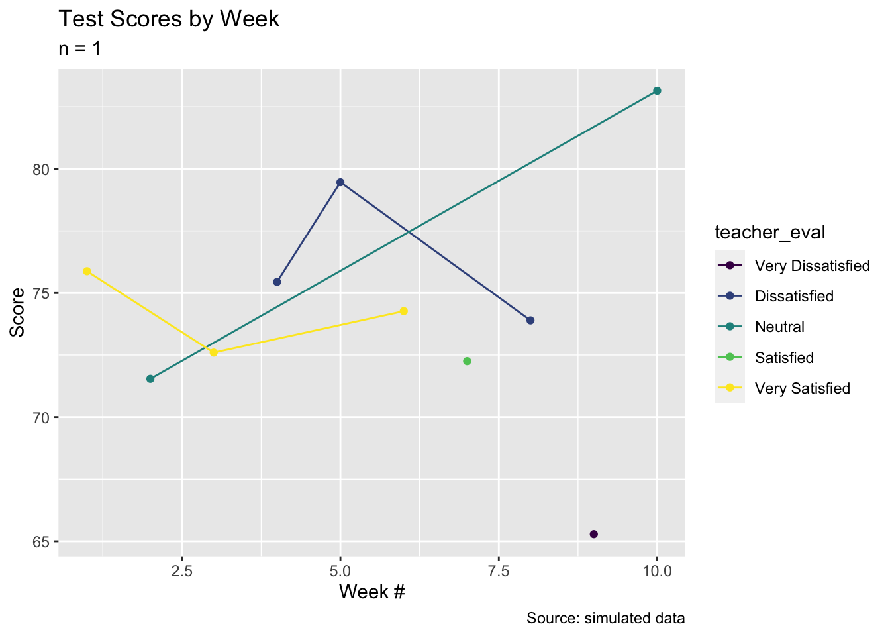
That doesn’t look right! Well, when you use the aes function in the initial ggplot call, it applies the aesthetics to all geoms in your graph. In this case, it thinks we want to just connect lines that are the same color. In these cases, we may need to use an aes function in an individual geom, like this:
ggplot(data = student_data, aes(x = week, y = score)) +
geom_point(aes(color = teacher_eval)) +
geom_line() +
labs(title = "Test Scores by Week",
subtitle = "n = 1",
x = "Week #",
y = "Score",
caption = "Source: simulated data")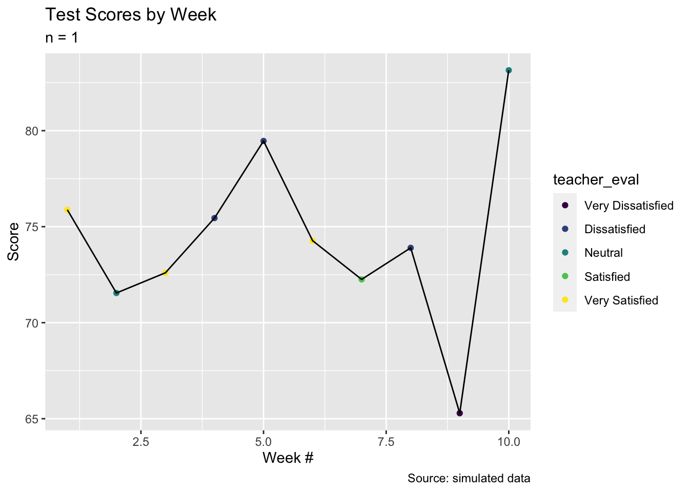
That’s better, but it still doesn’t look very good. Why not? Well, the black lines are covering up our colored points. This problem occurs because ggplots are sensitive to the order in which you add components. In this case, it adds the geom_point layer first, then the geom_line layer on top. So, let’s switch the ordering of the two layers.
ggplot(data = student_data, aes(x = week, y = score)) +
geom_line() +
geom_point(aes(color = teacher_eval)) +
labs(title = "Test Scores by Week",
subtitle = "n = 1",
x = "Week #",
y = "Score",
caption = "Source: simulated data")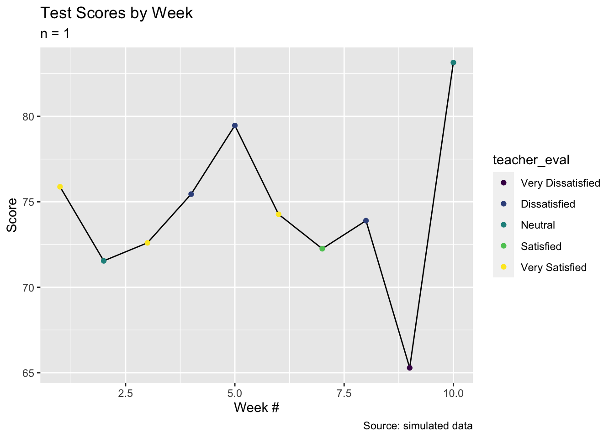
Nice! Let’s say that we wanted to make the points a little bigger so that we can see them better. We can do that using one of the arguments that can be found in the geom_point function, size.
ggplot(data = student_data, aes(x = week, y = score)) +
geom_line() +
geom_point(aes(color = teacher_eval), size = 3) +
labs(title = "Test Scores by Week",
subtitle = "n = 1",
x = "Week #",
y = "Score",
caption = "Source: simulated data")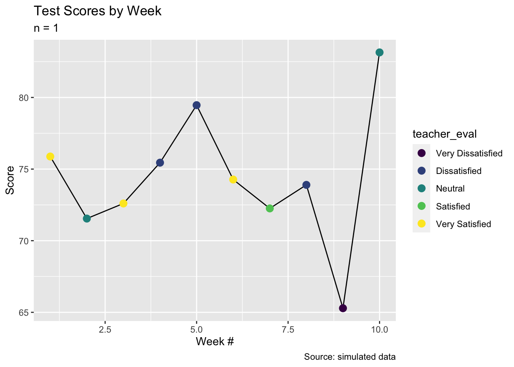
Note that arguments outside of the aes function are static–they are not tied to a variable. For example, we could turn all of the points blue by using the color argument outside of the aes function.
ggplot(data = student_data, aes(x = week, y = score)) +
geom_line() +
geom_point(color = "blue", size = 3) +
labs(title = "Test Scores by Week",
subtitle = "n = 1",
x = "Week #",
y = "Score",
caption = "Source: simulated data")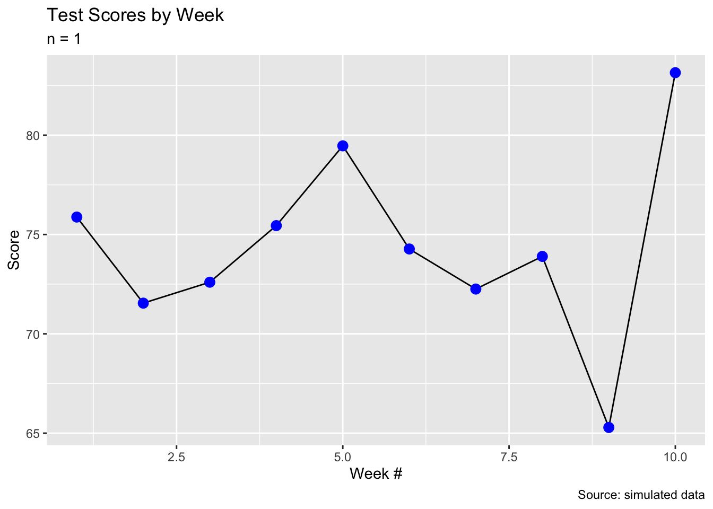
Getting arguments inside versus outside the aes function is very common. So, just remember, arguments inside the aes function are variable and are tied to your data. Arguments outside are static. For example, the size of the points doesn’t need to be static either, it can be tied to our data, for example, on class size.
ggplot(data = student_data, aes(x = week, y = score)) +
geom_line() +
geom_point(aes(color = teacher_eval, size = class_size)) +
labs(title = "Test Scores by Week",
subtitle = "n = 1",
x = "Week #",
y = "Score",
caption = "Source: simulated data")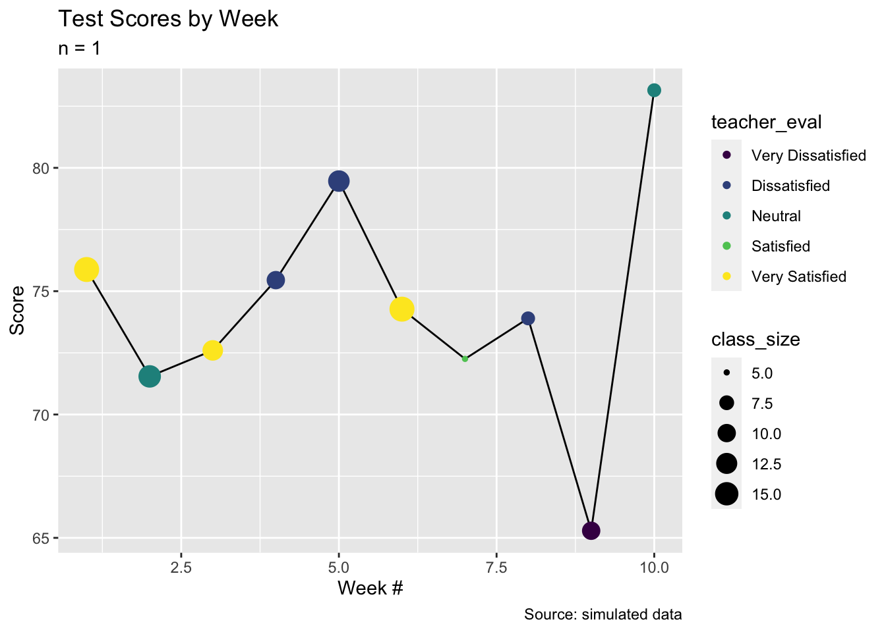
Another commonly-used argument is shape. Again, this can be used statically outside of the aes function.
ggplot(data = student_data, aes(x = week, y = score)) +
geom_line() +
geom_point(aes(color = teacher_eval, size = class_size), shape = "triangle") +
labs(title = "Test Scores by Week",
subtitle = "n = 1",
x = "Week #",
y = "Score",
caption = "Source: simulated data")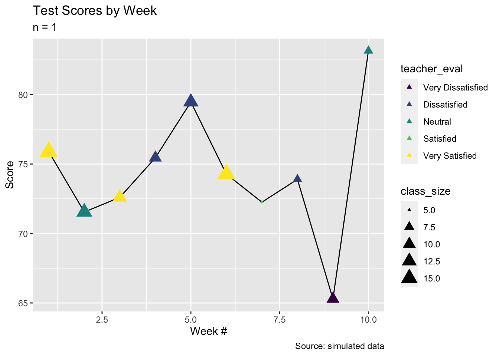
Or dynamically inside of the aes, for example, to have each teacher be a different shape.
ggplot(data = student_data, aes(x = week, y = score)) +
geom_line() +
geom_point(aes(color = teacher_eval, size = class_size, shape = teacher)) +
labs(title = "Test Scores by Week",
subtitle = "n = 1",
x = "Week #",
y = "Score",
caption = "Source: simulated data")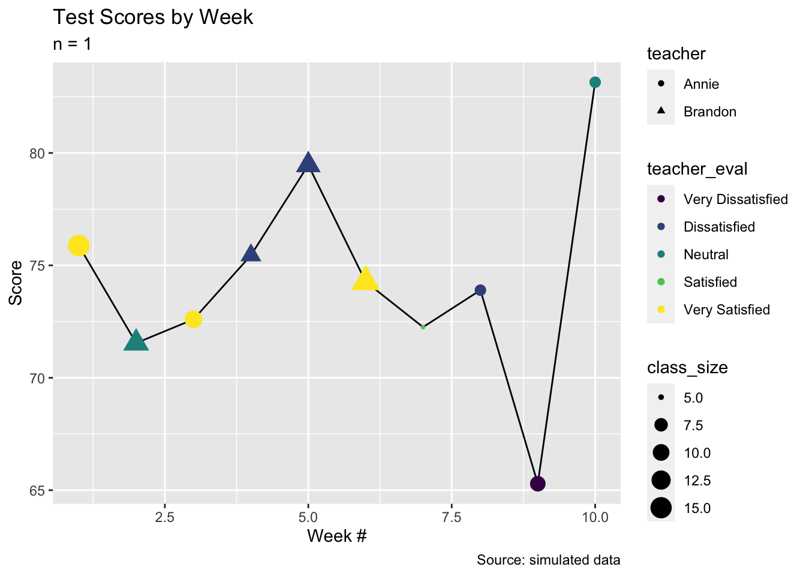
One other important aes argument is group. This argument is used when you have different groups of variables that you want visualized together. For example, let’s say we want to visual the math and reading scores in our data separately. As a reminder, where is what the data look like, with math and reading scores in two different columns.
student_data# A tibble: 10 × 7
week score teacher class_size teacher_eval scores_math scores_reading
<int> <dbl> <fct> <int> <ord> <dbl> <dbl>
1 1 75.9 Annie 17 Very Satisfied 69.9 66.4
2 2 71.5 Brandon 14 Neutral 77.9 69.0
3 3 72.6 Annie 12 Very Satisfied 62.7 66.2
4 4 75.4 Brandon 10 Dissatisfied 78.7 73.9
5 5 79.5 Brandon 13 Dissatisfied 41.0 65.9
6 6 74.3 Brandon 17 Very Satisfied 72.7 70.8
7 7 72.3 Annie 5 Satisfied 66.0 66.5
8 8 73.9 Annie 7 Dissatisfied 86.0 65.4
9 9 65.3 Annie 10 Very Dissatisfied 62.9 70.7
10 10 83.1 Annie 7 Neutral 62.3 65.6One inefficient way to visualize these two different groups of scores would be to have to have separate geoms for each column. For example:
ggplot(data = student_data) +
geom_point(aes(x = week, y = scores_math), color = "purple", size = 2) +
geom_point(aes(x = week, y = scores_reading), color = "darkgreen", size = 2) +
geom_line(aes(x = week, y = scores_math), color = "purple") +
geom_line(aes(x = week, y = scores_reading), color = "darkgreen")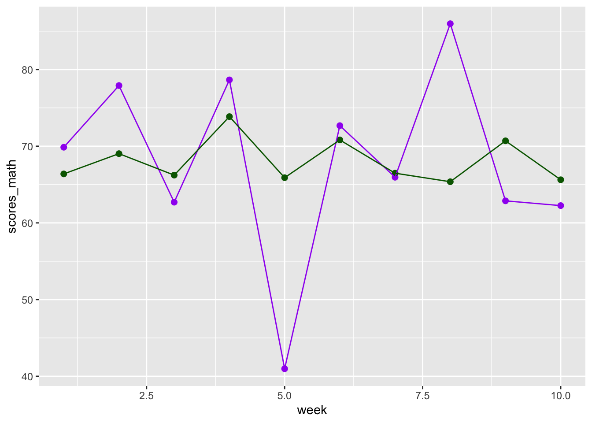
But sometimes your data in a tidy/ long format, where each score is a separate row/ observation and there is an additional variable/ column indicating what type of score it is. We will transform our data manually to be in that format.
student_data_long <- student_data %>%
pivot_longer(cols = c("scores_reading", "scores_math"))
student_data_long# A tibble: 20 × 7
week score teacher class_size teacher_eval name value
<int> <dbl> <fct> <int> <ord> <chr> <dbl>
1 1 75.9 Annie 17 Very Satisfied scores_reading 66.4
2 1 75.9 Annie 17 Very Satisfied scores_math 69.9
3 2 71.5 Brandon 14 Neutral scores_reading 69.0
4 2 71.5 Brandon 14 Neutral scores_math 77.9
5 3 72.6 Annie 12 Very Satisfied scores_reading 66.2
6 3 72.6 Annie 12 Very Satisfied scores_math 62.7
7 4 75.4 Brandon 10 Dissatisfied scores_reading 73.9
8 4 75.4 Brandon 10 Dissatisfied scores_math 78.7
9 5 79.5 Brandon 13 Dissatisfied scores_reading 65.9
10 5 79.5 Brandon 13 Dissatisfied scores_math 41.0
11 6 74.3 Brandon 17 Very Satisfied scores_reading 70.8
12 6 74.3 Brandon 17 Very Satisfied scores_math 72.7
13 7 72.3 Annie 5 Satisfied scores_reading 66.5
14 7 72.3 Annie 5 Satisfied scores_math 66.0
15 8 73.9 Annie 7 Dissatisfied scores_reading 65.4
16 8 73.9 Annie 7 Dissatisfied scores_math 86.0
17 9 65.3 Annie 10 Very Dissatisfied scores_reading 70.7
18 9 65.3 Annie 10 Very Dissatisfied scores_math 62.9
19 10 83.1 Annie 7 Neutral scores_reading 65.6
20 10 83.1 Annie 7 Neutral scores_math 62.3We can no plot this data much more efficiently. But first let’s see what happens if we don’t use the group argument.
ggplot(data = student_data_long, aes(x = week, y = value)) +
geom_line() +
geom_point()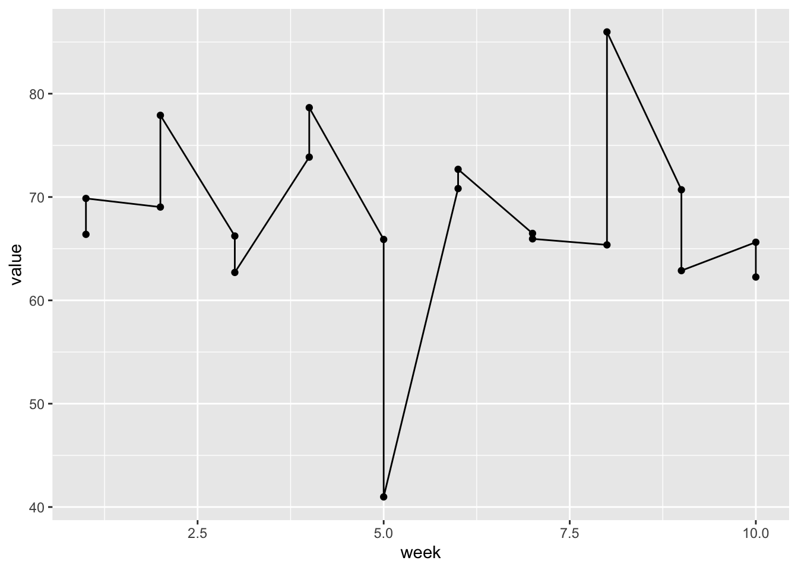
The plot looks like this because it doesn’t know which points belong in which group, so it’s trying to connect them all sequentially. You can use the group argument to specify which points belong to which groups.
ggplot(data = student_data_long, aes(x = week, y = value, group = name)) +
geom_line() +
geom_point()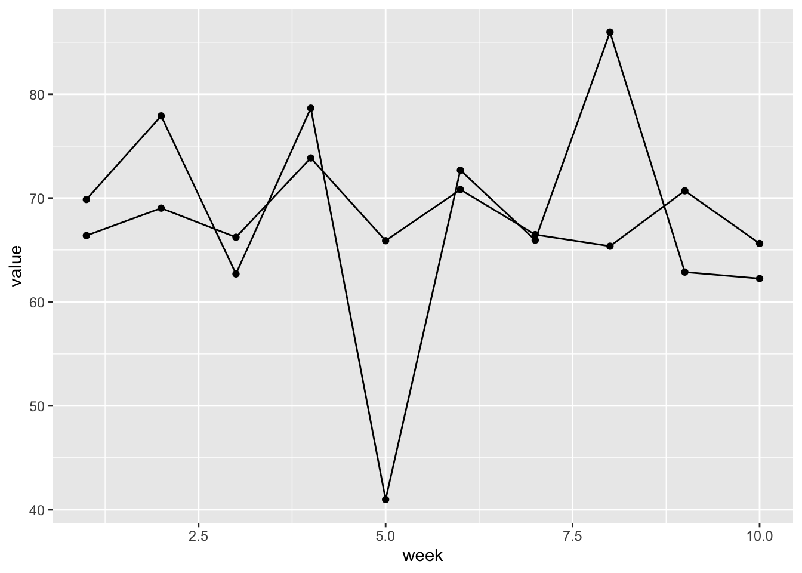
Of course, in this case, you’d probably want to change the shape or color to distinguish the two groups.
ggplot(data = student_data_long, aes(x = week, y = value, group = name, shape = name, color = name, linetype = name)) +
geom_line() +
geom_point()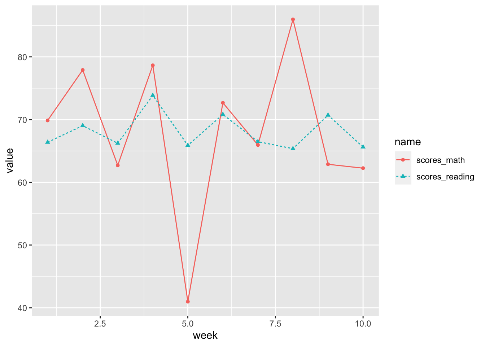
Section 4: Visualizing Statistical Inferences & Summarizations
Ggplot can also do statistical inferences and summaries for you. One of the most common examples of this functionality is visualizing trend lines (with error bars), which primarily can be used via the geom_smooth function
ggplot(data = student_data, aes(x = week, y = score)) +
geom_smooth()`geom_smooth()` using method = 'loess' and formula 'y ~ x'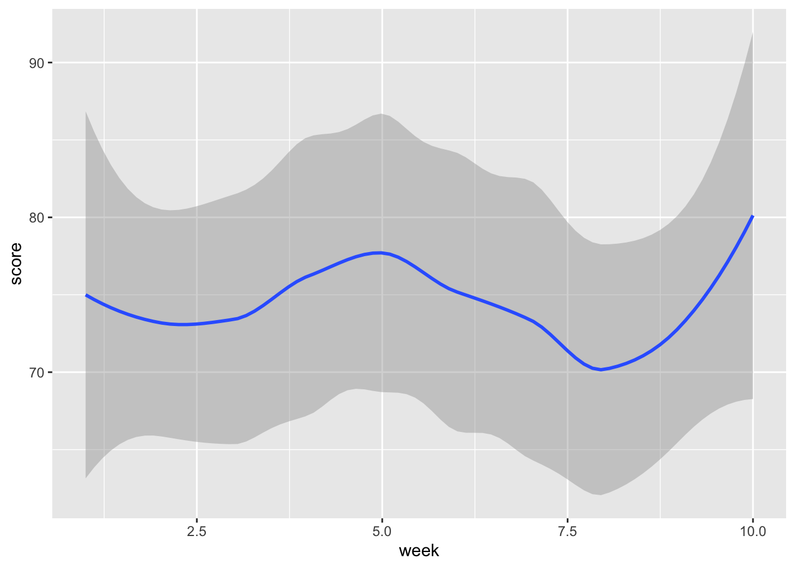
And remember, multiple geoms can be used together.
ggplot(data = student_data, aes(x = week, y = score)) +
geom_point() +
geom_line() +
geom_smooth()`geom_smooth()` using method = 'loess' and formula 'y ~ x'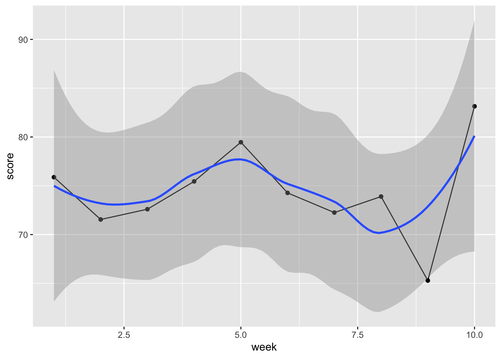
By default, the geom_smooth function estimates a loess regression on your data. You can adjust some of the parameters of this function, for example, the “smoothness” of the line using the span argument.
For example, to have it be smoother with a larger span (>1).
ggplot(data = student_data, aes(x = week, y = score)) +
geom_point() +
geom_smooth(span = 2)`geom_smooth()` using method = 'loess' and formula 'y ~ x'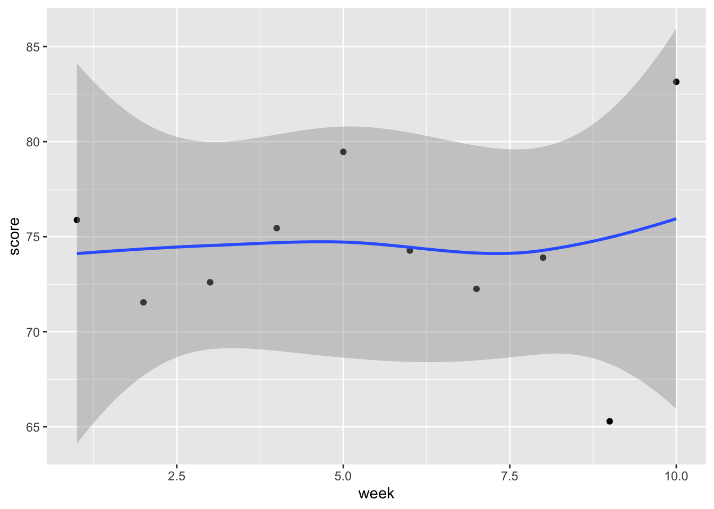
Or to be more “spiky” with a span < 1.
ggplot(data = student_data, aes(x = week, y = score)) +
geom_point() +
geom_smooth(span = .5)`geom_smooth()` using method = 'loess' and formula 'y ~ x'Warning in stats::qt(level/2 + 0.5, pred$df): NaNs producedWarning in max(ids, na.rm = TRUE): no non-missing arguments to max; returning
-Inf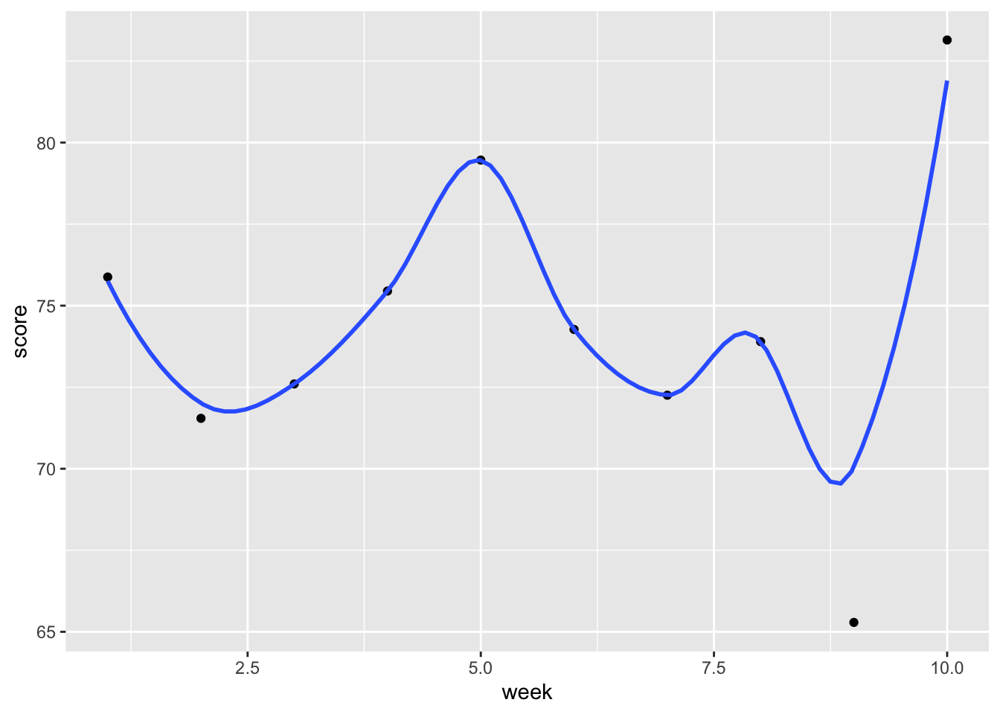
In addition to a loess regression, there are other methods that can be used and accessed via the method argument. For example, you can fit a linear model.
ggplot(data = student_data, aes(x = week, y = score)) +
geom_point() +
geom_smooth(method = "lm")`geom_smooth()` using formula 'y ~ x'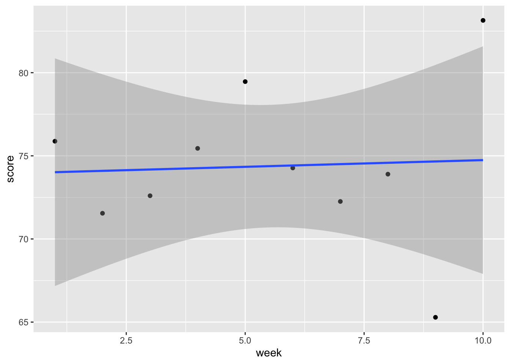
Just like the other geoms, they can be customized in a variety of ways. For example, we can change the color of the line.
ggplot(data = student_data, aes(x = week, y = score)) +
geom_point() +
geom_smooth(method = "lm", color = "black", linetype = "dashed")`geom_smooth()` using formula 'y ~ x'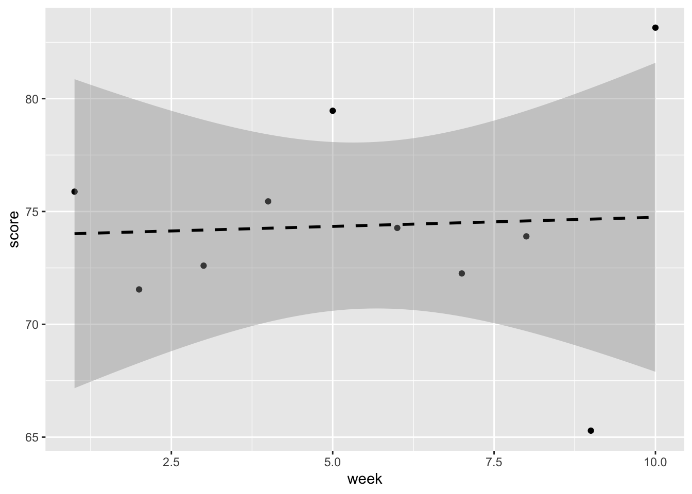
Or, we can fit these regression on different groups.
ggplot(data = student_data, aes(x = week, y = score, color = teacher)) +
geom_point() +
geom_smooth(method = "lm", linetype = "dashed")`geom_smooth()` using formula 'y ~ x'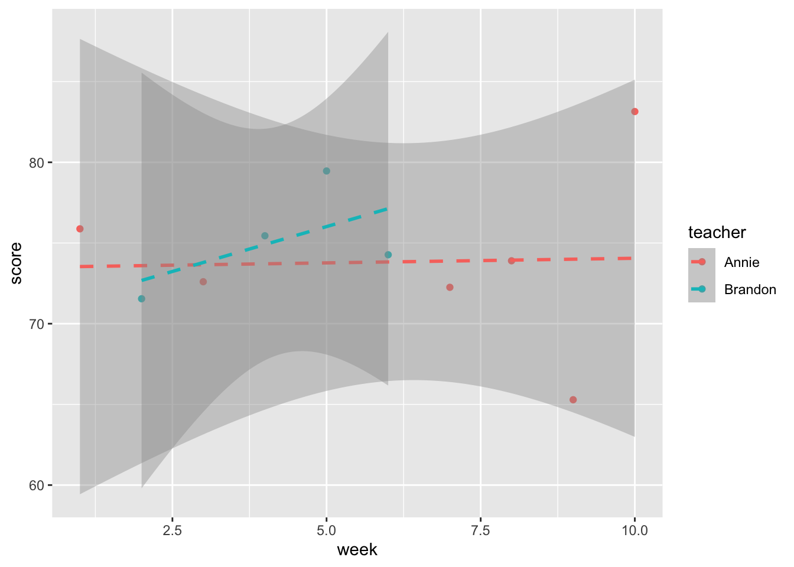
Other geoms can be used to visualize statistical outputs, such as uncertainty. There are a variety of functions to visualize uncertainty. Let’s simulate some more data to add more subjects besides math and reading.
# Simulate single-participant data
weeks <- 1:10
scores <- rnorm(10, mean = 75, sd = 5)
scores_math <- rnorm(10, mean = 75, sd = 15)
scores_reading <- rnorm(10, mean = 65, sd = 5)
scores_science <- rnorm(10, mean = 70, sd = 5)
scores_art <- rnorm(10, mean = 75, sd = 5)
scores_music <- rnorm(10, mean = 75, sd = 10)
# Create a tibble
student_data <- tibble(week = weeks, scores_math = scores_math, scores_reading = scores_reading, scores_science = scores_science, scores_art = scores_art, scores_music = scores_music, teacher = teacher)
# Display the first few rows of the data
student_data_long <- student_data %>%
pivot_longer(cols = c(scores_math, scores_reading, scores_science, scores_art, scores_music))
student_data_long# A tibble: 50 × 4
week teacher name value
<int> <fct> <chr> <dbl>
1 1 Annie scores_math 78.6
2 1 Annie scores_reading 66.3
3 1 Annie scores_science 66.8
4 1 Annie scores_art 68.1
5 1 Annie scores_music 83.2
6 2 Brandon scores_math 88.5
7 2 Brandon scores_reading 65.5
8 2 Brandon scores_science 66.3
9 2 Brandon scores_art 76.7
10 2 Brandon scores_music 68.5
# … with 40 more rowsFor example, on the long data, we can make box plots (make sure to use the group argument!).
ggplot(data = student_data_long, aes(x = week, y = value, group = week)) +
geom_boxplot()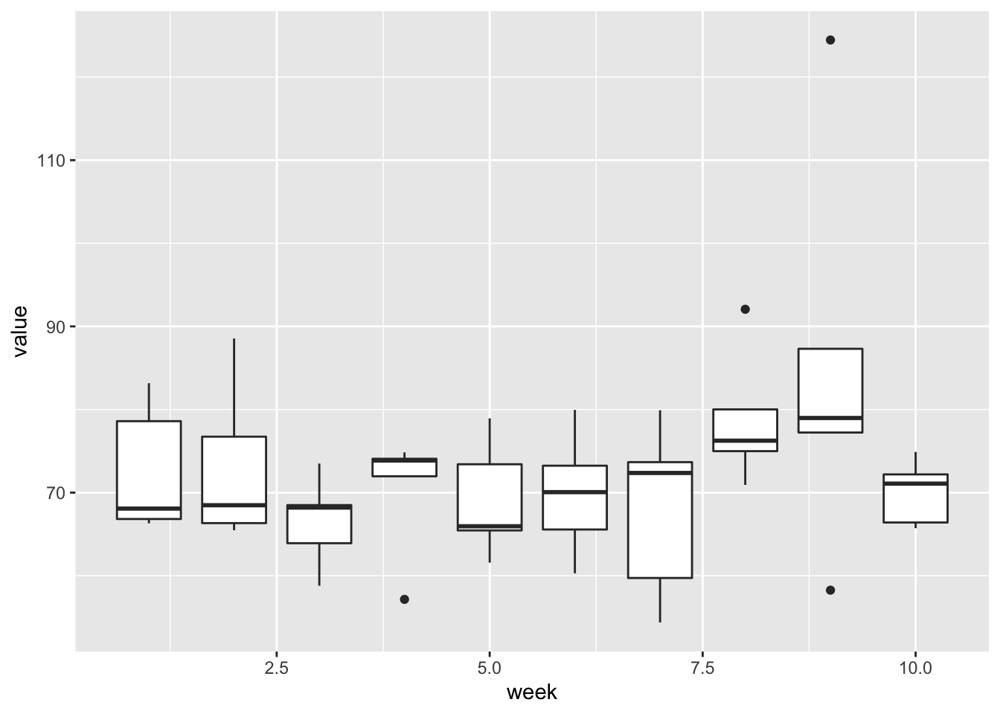
Let’s continue and average our data down at the weekly level and estiamte uncertainty.
student_data_summarized <- student_data_long %>%
group_by(week) %>%
summarize(mean = mean(value),
se = sd(value) / sqrt(n())) %>%
mutate(ci_low = mean - (se * 1.96),
ci_high = mean + (se * 1.96))
student_data_summarized# A tibble: 10 × 5
week mean se ci_low ci_high
<int> <dbl> <dbl> <dbl> <dbl>
1 1 72.6 3.47 65.8 79.4
2 2 73.1 4.34 64.6 81.6
3 3 66.6 2.47 61.7 71.4
4 4 70.4 3.34 63.8 76.9
5 5 69.1 3.12 62.9 75.2
6 6 69.8 3.34 63.3 76.4
7 7 68.0 4.73 58.7 77.3
8 8 78.8 3.61 71.8 85.9
9 9 85.2 10.9 63.9 107.
10 10 70.1 1.75 66.6 73.5Note that some geoms require additional aes arguments. For example, here is how you would add error bars using our data.
ggplot(data = student_data_summarized, aes(x = week, ymin = ci_low, y = mean, ymax = ci_high)) +
geom_errorbar() +
geom_point()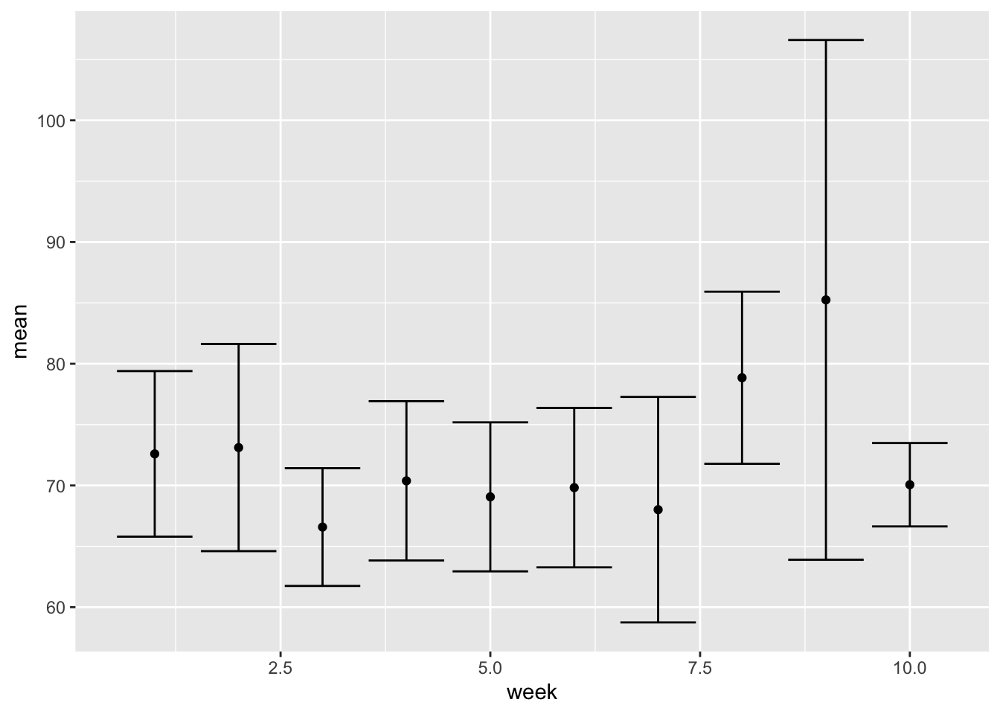
Other options include lineranges (pointranges) and ribbons. Note that the aes function is staying the same in all of these examples, we’re just changing the geoms because the fundamental mapping of our data is remaining the same.
ggplot(data = student_data_summarized, aes(x = week, ymin = ci_low, y = mean, ymax = ci_high)) +
geom_pointrange()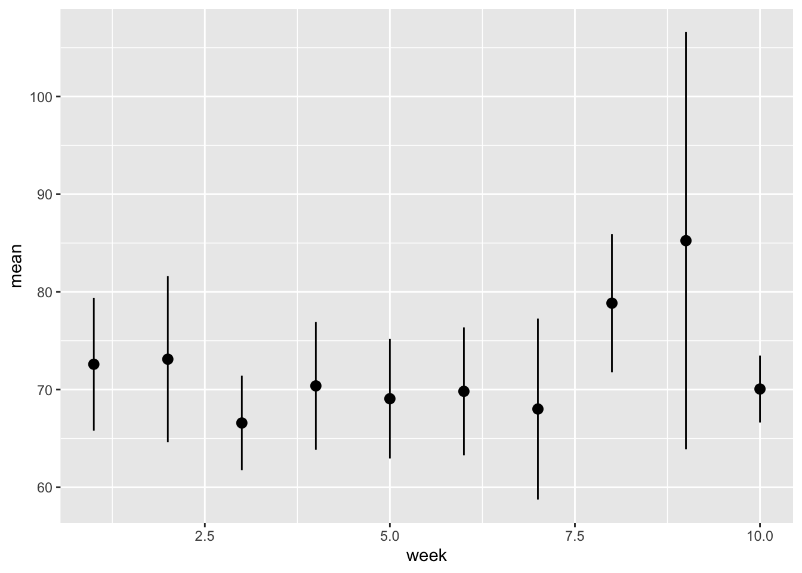
ggplot(data = student_data_summarized, aes(x = week, ymin = ci_low, y = mean, ymax = ci_high)) +
geom_ribbon(fill = "grey") +
geom_point()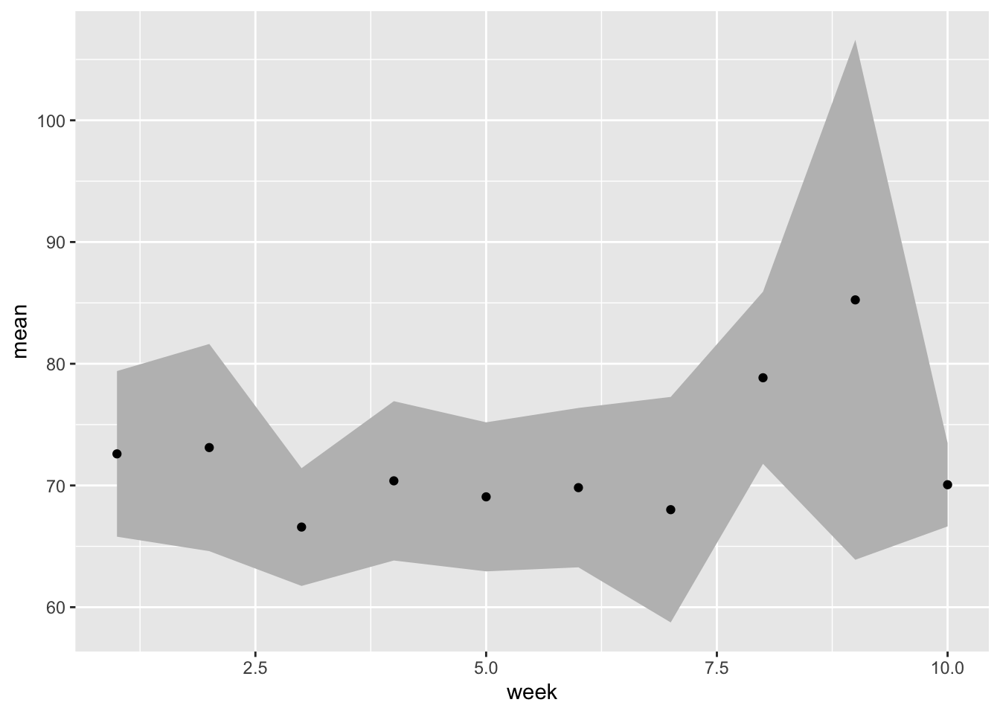
Section 5: Upping Your ggplot Game
Annotations
Annotations are a way to add additional information to your graphs. Here, we will go over some of the most useful annotations.
student_data <- student_data %>%
mutate(period = if_else(week <= 5, "pre-treatment", "post-treatment"),
scores_reading = if_else(period == "post-treatment", scores_reading + 10, scores_reading),
intervention = if_else(week == 5, "Intervention", NA))Vertical Lines
Let’s imagine that we implemented an intervention on week 5 and we want to visualize this intervention using a vertical line. We can use the geom_vline function. You can set the x-intercept of the vertical line using the xintercept argument in aes.
ggplot(data = student_data, aes(x = week, y = scores_reading)) +
geom_line() +
geom_point() +
geom_vline(aes(xintercept = 5))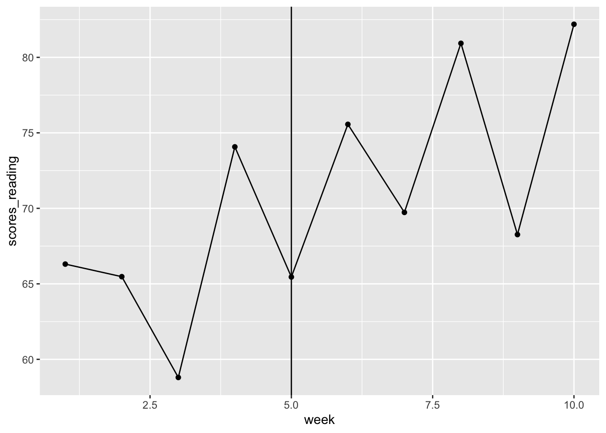
These lines can be customized just like other graphical components.
ggplot(data = student_data, aes(x = week, y = scores_reading)) +
geom_line() +
geom_point() +
geom_vline(aes(xintercept = 5), linetype = "dotted")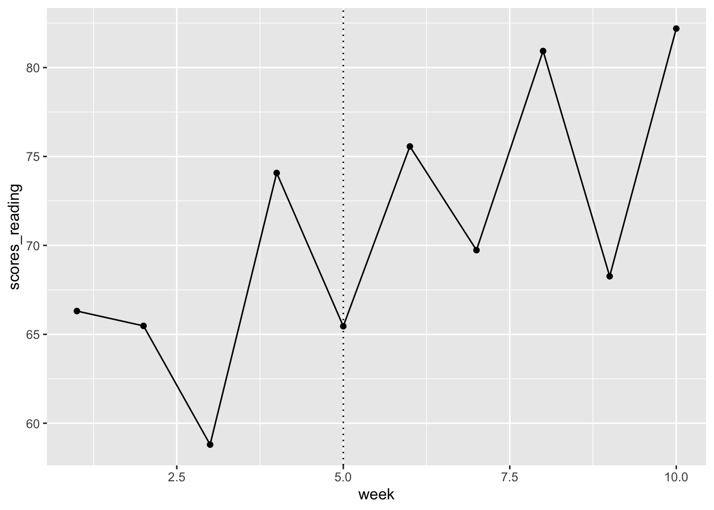
Remember, we can always use the group argument in the aes function to separate groups.
ggplot(data = student_data, aes(x = week, y = scores_reading, group = period)) +
geom_line() +
geom_point() +
geom_vline(aes(xintercept = 5.5), linetype = "dashed")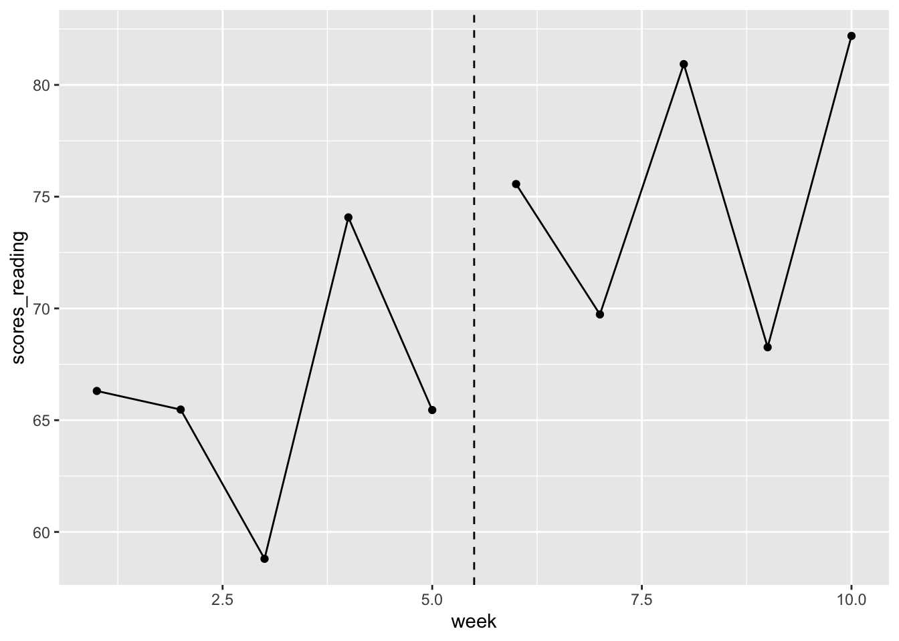
Horizontal Lines
You can add horizontal lines via the geom_hline function. For example here, we will calculate the mean of the scores and plot the mean as a horizontal line.
scores_reading_mean <- student_data %>%
summarize(mean = mean(scores_reading)) %>%
pull(mean)
scores_reading_mean[1] 70.67883ggplot(data = student_data, aes(x = week, y = scores_reading)) +
geom_line() +
geom_point() +
geom_hline(aes(yintercept = scores_reading_mean), linetype = "dotdash")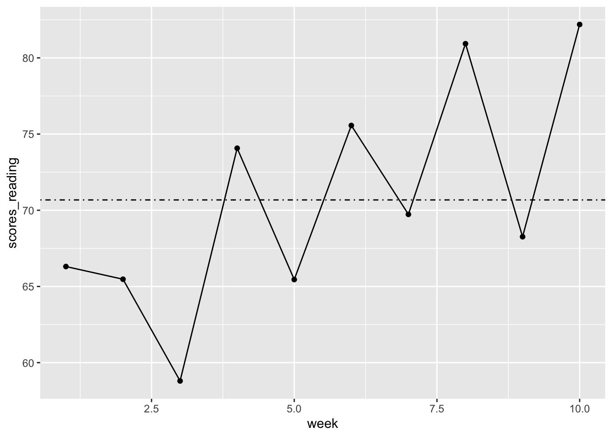
Rectangles
You can also draw shapes, for example, rectangles. Here, we draw a rectangle and shade it to represent the period in which the intervention was delivered.
ggplot(data = student_data, aes(x = week, y = scores_reading)) +
geom_rect(aes(xmin = 4.5, xmax = 5.5, ymin = -Inf, ymax = Inf), alpha = .1) +
geom_line() +
geom_point()Text
We can also add text.
ggplot(data = student_data, aes(x = week, y = scores_reading)) +
geom_rect(aes(xmin = 4.5, xmax = 5.5, ymin = -Inf, ymax = Inf), alpha = .1) +
geom_line() +
geom_point() +
annotate("text", x = 5, y = 60, label = "Intervention")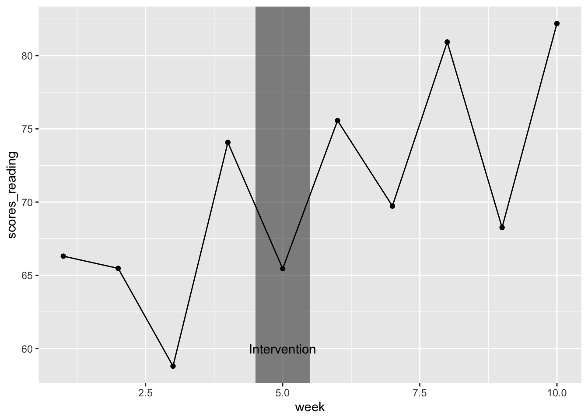
Point Labels
We can also add labels. Make sure you use the labels argument in aes.
ggplot(data = student_data, aes(x = week, y = scores_reading, label = intervention)) +
geom_line() +
geom_point() +
geom_label()Warning: Removed 9 rows containing missing values (geom_label).
Faceting
Faceting allows you to break your data up into different plots on a grid. For example, if we wanted to visualize all the different scores, we would have a messy graph that you can’t make much out of.
ggplot(data = student_data_long, aes(x = week, y = value, color = name)) +
geom_line() +
geom_point()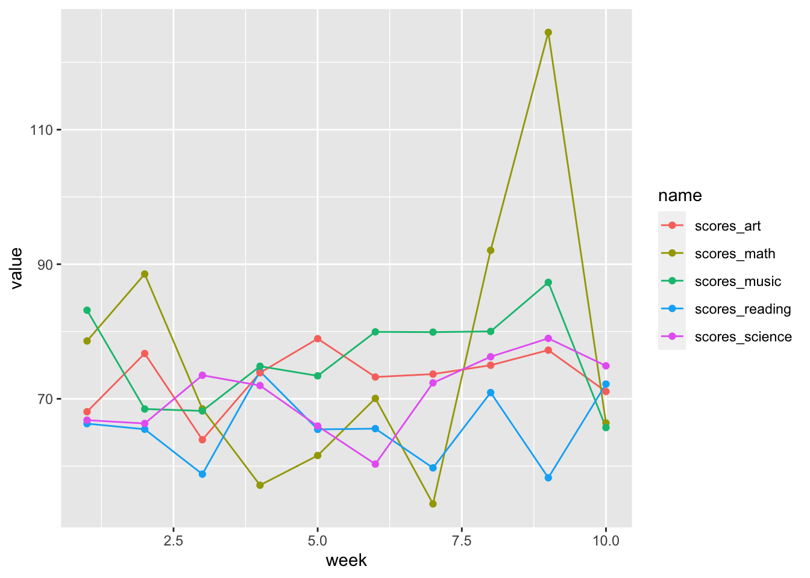
So we can “facet” the data into smaller individual plots. You can facet by a single variable.
ggplot(data = student_data_long, aes(x = week, y = value, color = name)) +
geom_line() +
geom_point() +
facet_wrap(name~.)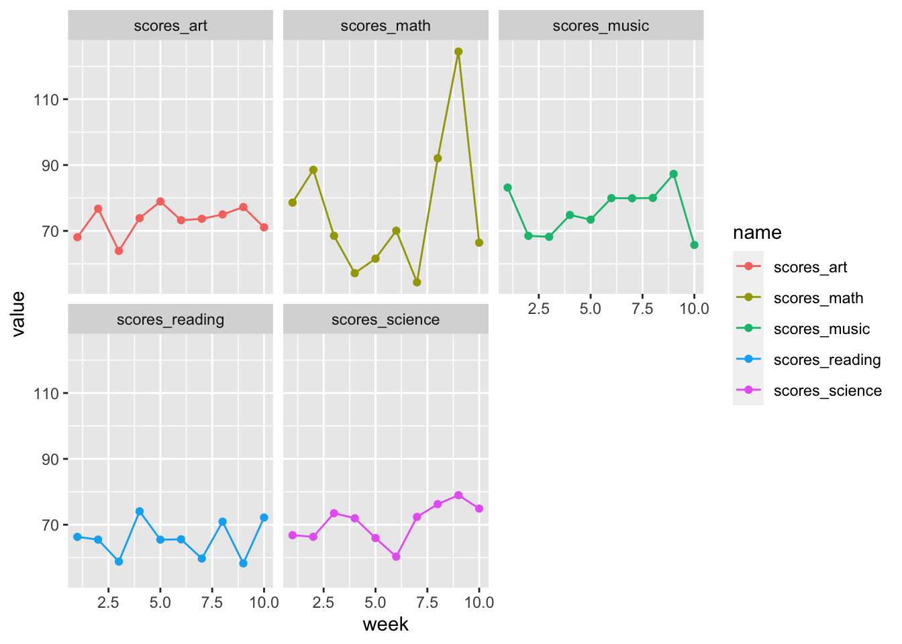
Or by multiple variables.
ggplot(data = student_data_long, aes(x = week, y = value, color = name)) +
geom_line() +
geom_point() +
facet_wrap(name~teacher)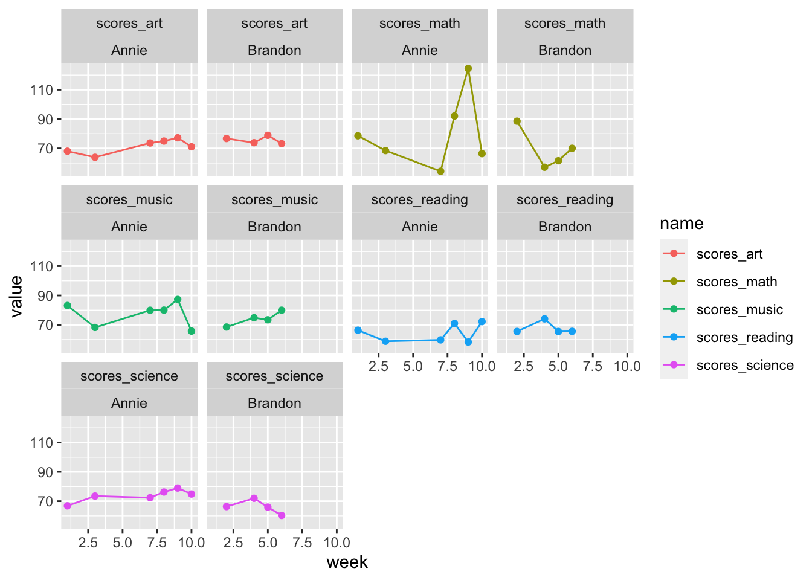
You can easily adjust the number of columns to fit your analysis needs. For example, in this graph, you can more easily compare scores across teachers for the same subject.
ggplot(data = student_data_long, aes(x = week, y = value, color = name)) +
geom_line() +
geom_point() +
facet_wrap(name~teacher, ncol = 2)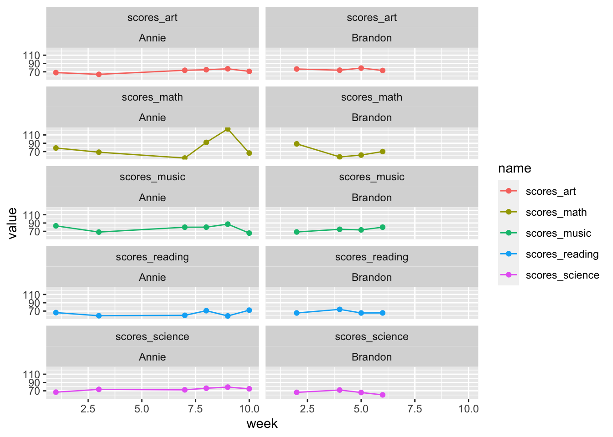
Section 6: Making your ggplots look nice
We’ve done a lot of work to make some visualizations for single-participant studies. However, the graphs can definitely use some tweaking. Here, I’ll show you some of the more common ones.
Plot Labels
We added labels to our graph earlier, but here they are again. The easiest way to add labels is to use the labs function. You don’t have to use all of the options within the labs function as there are many to choose from.
ggplot(data = student_data, aes(x = week, y = scores_reading)) +
geom_point() +
geom_line() +
labs(title = "Test Scores by Week",
subtitle = "n = 1",
x = "Week #",
y = "Score",
caption = "Source: simulated data")
Working with Scales
Another common thing you may want to adjust in your graph are the scales. For example, the x-axis doesn’t look very good with the half numbers given that we are only working with full weeks. We will use the scale_x_continuous function to adjust the x-axis.
ggplot(data = student_data, aes(x = week, y = scores_reading)) +
geom_point() +
geom_line() +
labs(title = "Test Scores by Week",
subtitle = "n = 1",
x = "Week #",
y = "Score",
caption = "Source: simulated data") +
scale_x_continuous(breaks = seq(1, 10, 1))
You can also adjust the label format. For example, we can make the y-axis into percentages using the scale_y_continuous function.
You may need to install the scales package.
install.packages("scales")ggplot(data = student_data, aes(x = week, y = scores_reading*.01)) +
geom_point() +
geom_line() +
labs(title = "Test Scores by Week",
subtitle = "n = 1",
x = "Week #",
y = "Score",
caption = "Source: simulated data") +
scale_x_continuous(breaks = seq(1, 10, 1)) +
scale_y_continuous(labels = scales::percent_format())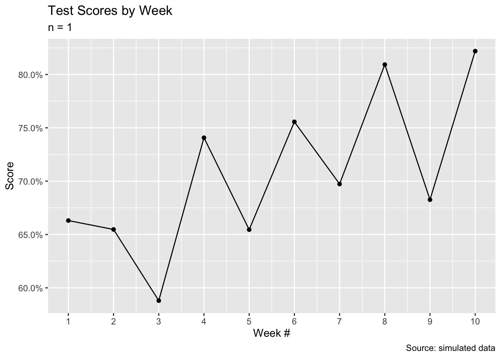
You can also adjust the “window” of the graph via its limits. For example, let’s say we wanted the y-axis to go from 0-100.
ggplot(data = student_data, aes(x = week, y = scores_reading)) +
geom_point() +
geom_line() +
labs(title = "Test Scores by Week",
subtitle = "n = 1",
x = "Week #",
y = "Score",
caption = "Source: simulated data") +
scale_x_continuous(breaks = seq(1, 10, 1)) +
scale_y_continuous(limits = c(0, 100))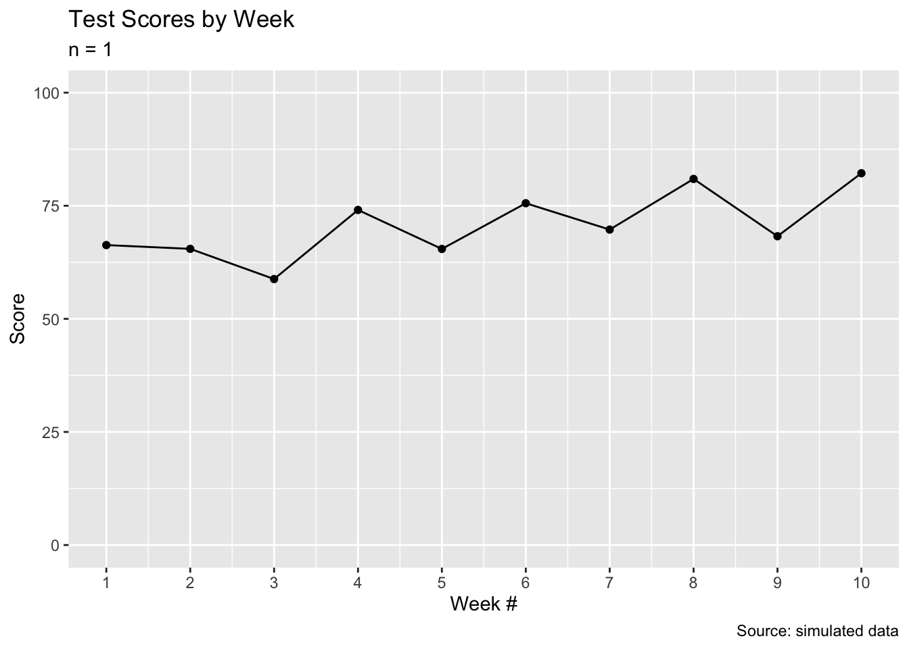
Working with Colors
One of our goals in making beautiful ggplots should be to make our graphs as accessible as possible. One important way to make our graphs more accessible is by using color-blind-friendly colors. The default colors in R are not great, so we can use the viridis colors that are designed to be color-blind friendly.
ggplot(data = student_data, aes(x = week, y = scores_reading*.01, color = teacher)) +
geom_point() +
geom_line() +
labs(title = "Test Scores by Week",
subtitle = "n = 1",
x = "Week #",
y = "Score",
caption = "Source: simulated data") +
scale_x_continuous(breaks = seq(1, 10, 1)) +
scale_y_continuous(labels = scales::percent_format()) +
scale_color_viridis_d()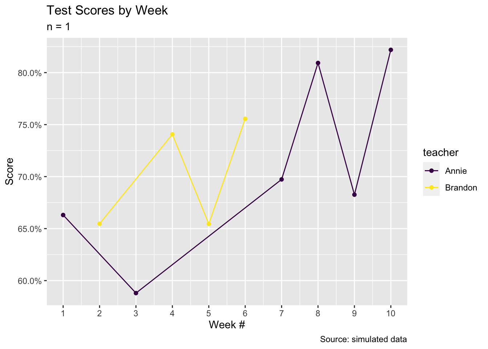
Of course, another option is to use shapes instead of colors when possible.
ggplot(data = student_data, aes(x = week, y = scores_reading*.01, shape = teacher)) +
geom_point(size = 2) +
geom_line() +
labs(title = "Test Scores by Week",
subtitle = "n = 1",
x = "Week #",
y = "Score",
caption = "Source: simulated data") +
scale_x_continuous(breaks = seq(1, 10, 1)) +
scale_y_continuous(labels = scales::percent_format())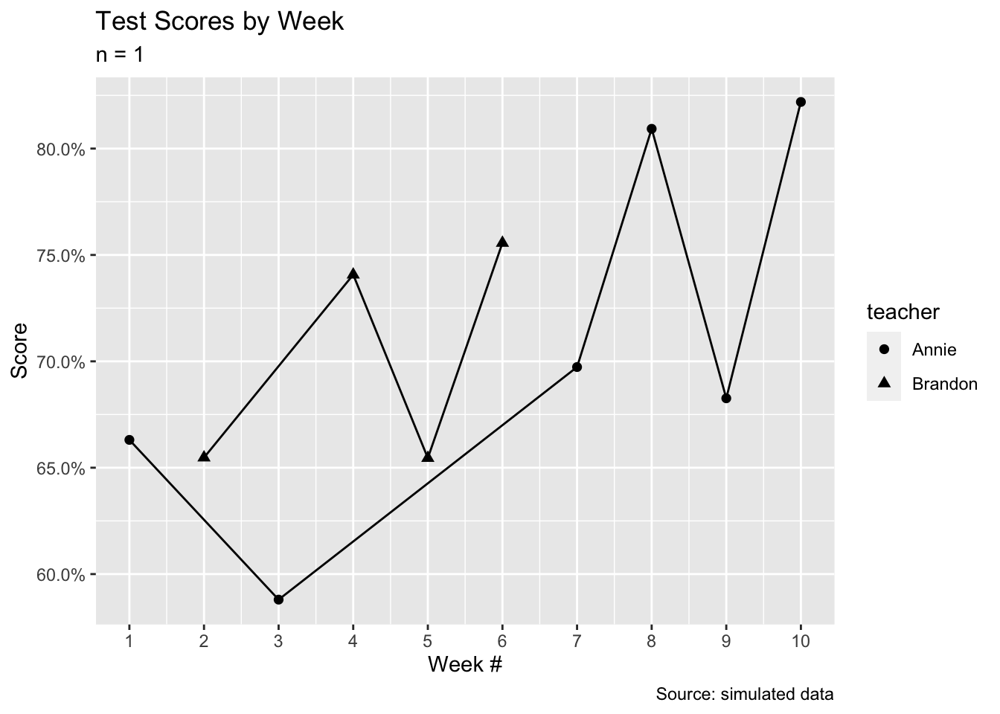
Themes
Finally, we are going to talk about themes. Themes allow you to change the background visuals of your graph. For example, by default, you get a grey background with white grid lines—something I personally really dislike.
Luckily for us, ggplot comes with some pre-made themes we can use.
My personal favorite for academic graphs is theme_classic but other popular ones include theme_bw and theme_minimal
ggplot(data = student_data, aes(x = week, y = scores_reading*.01)) +
geom_point() +
geom_line() +
labs(title = "Test Scores by Week",
subtitle = "n = 1",
x = "Week #",
y = "Score",
caption = "Source: simulated data") +
scale_x_continuous(breaks = seq(1, 10, 1)) +
scale_y_continuous(labels = scales::percent_format()) +
theme_classic()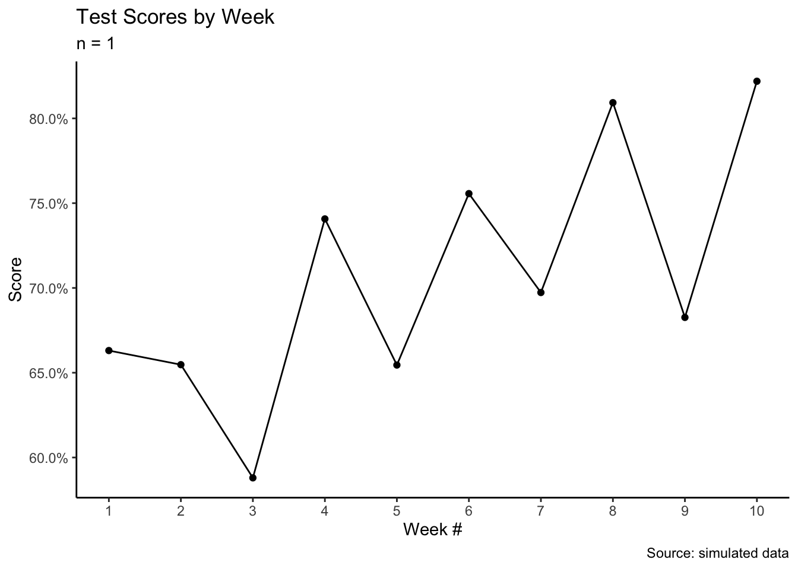
ggplot(data = student_data, aes(x = week, y = scores_reading*.01)) +
geom_point() +
geom_line() +
labs(title = "Test Scores by Week",
subtitle = "n = 1",
x = "Week #",
y = "Score",
caption = "Source: simulated data") +
scale_x_continuous(breaks = seq(1, 10, 1)) +
scale_y_continuous(labels = scales::percent_format()) +
theme_bw()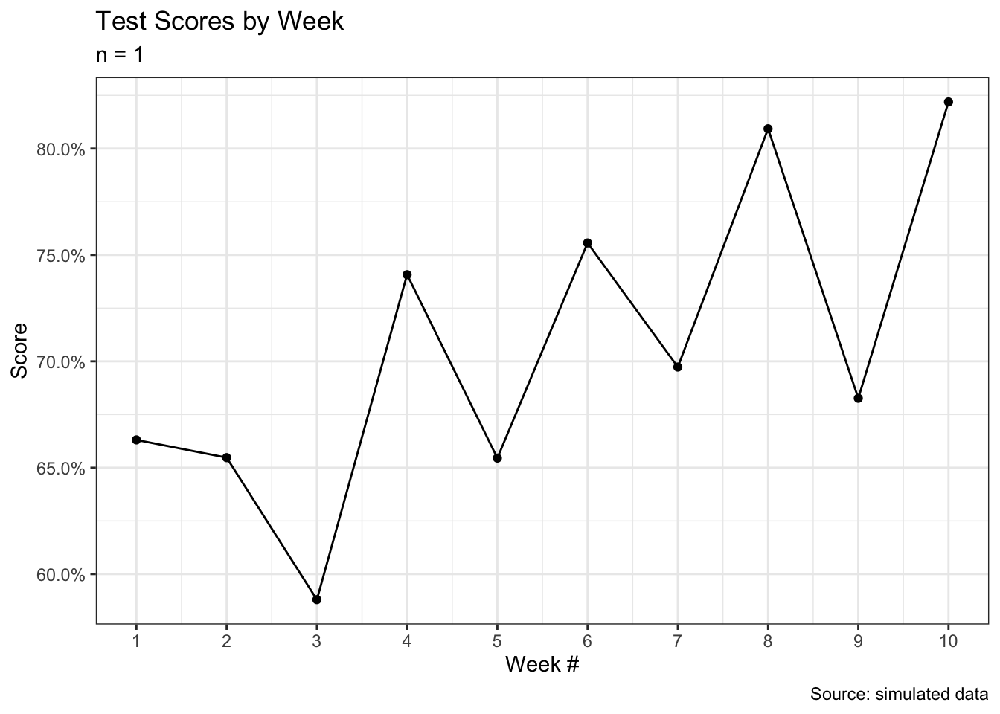
ggplot(data = student_data, aes(x = week, y = scores_reading*.01)) +
geom_point() +
geom_line() +
labs(title = "Test Scores by Week",
subtitle = "n = 1",
x = "Week #",
y = "Score",
caption = "Source: simulated data") +
scale_x_continuous(breaks = seq(1, 10, 1)) +
scale_y_continuous(labels = scales::percent_format()) +
theme_minimal()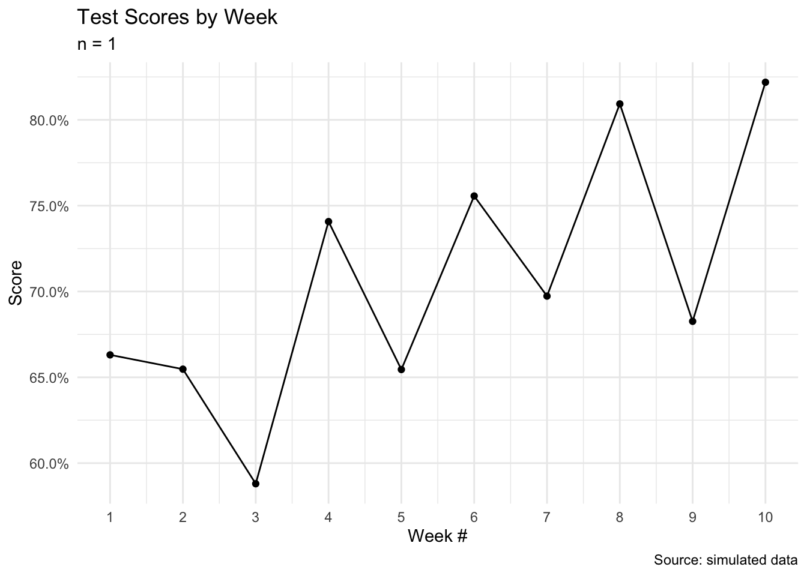
There are many other themes that can be found in the ggthemes package. For example, you can make your plots look like they were made by FiveThirtyEight.
install.packages("ggthemes")ggplot(data = student_data, aes(x = week, y = scores_reading*.01, color = teacher)) +
geom_point() +
geom_line() +
labs(title = "Test Scores by Week",
subtitle = "n = 1",
x = "Week #",
y = "Score",
caption = "Source: simulated data") +
scale_x_continuous(breaks = seq(1, 10, 1)) +
scale_y_continuous(labels = scales::percent_format()) +
ggthemes::theme_fivethirtyeight()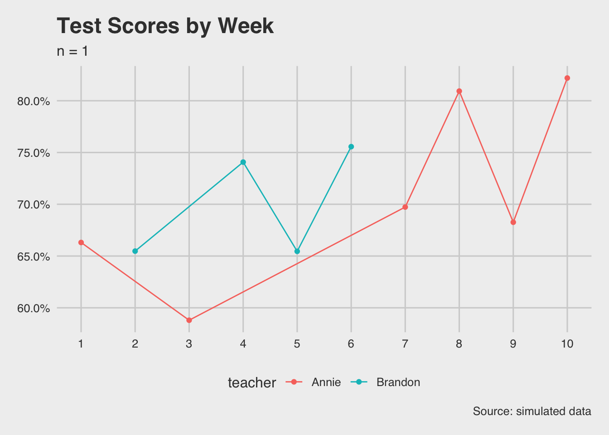
You can also customize individual components of the theme using the theme function. There are many, many options. So, I encourage you to explore those possibilities on their. However, one that I use often is adjusting the legend position.
By default, the legend is put to the right of the graph.
ggplot(data = student_data_long, aes(x = week, y = value, color = name)) +
geom_line() +
geom_point()But you can change its location.
ggplot(data = student_data_long, aes(x = week, y = value, color = name)) +
geom_line() +
geom_point() +
theme(legend.position = "none")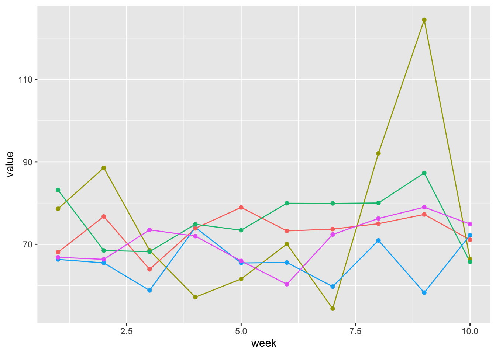
Or you can get rid of it all together.
ggplot(data = student_data_long, aes(x = week, y = value, color = name)) +
geom_line() +
geom_point() +
facet_wrap(name~.) +
theme(legend.position = "none")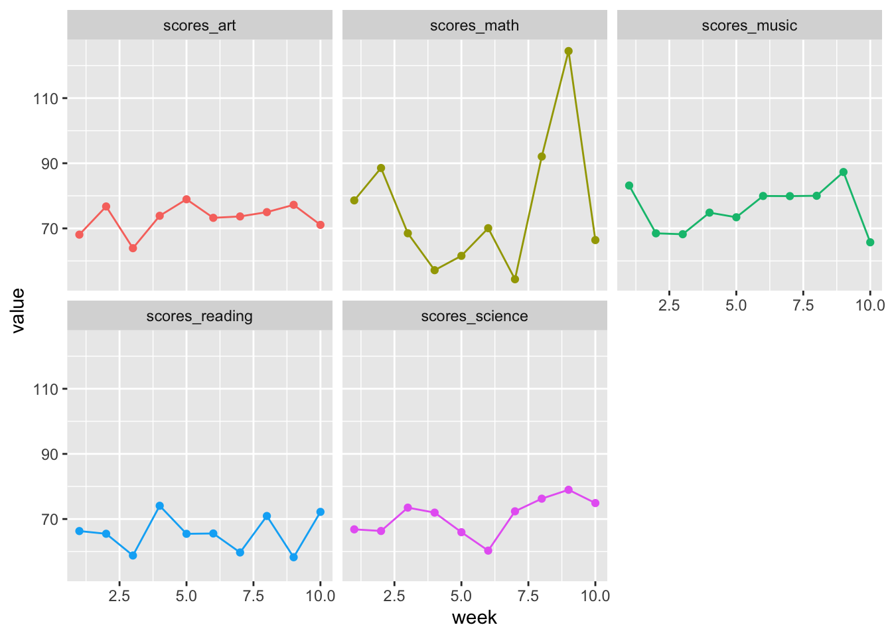